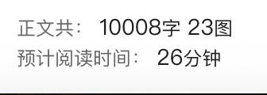
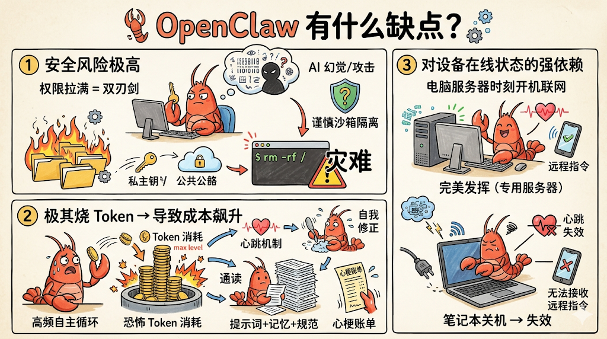

大家好，我是小林。
这一个月，开源圈可以说是被 OpenClaw 彻底刷屏了。
它到底有多火？火到它 GitHub 仓库的 Star 数一路狂飙，直接霸榜第一。

火到各大互联网大厂连夜跟进，纷纷推出了自家的小龙虾。

更离谱的是，这把火甚至已经烧到了面试场上，最近不少去面试的同学跟我反馈，面试官已经开始拿 OpenClaw 疯狂拷打候选人了。


说实话，看到这些我挺心疼现在准备找实习的 27 届同学的。现在 AI 技术发展实在太快了，以前我们按部就班背背常规八股文就行，现在还得时刻跟进当下的 AI 热点技术。
这变相等于大家的复习负担又重了不少，简直卷出了天际。
但是大家别慌，为了帮大家啃下这块硬骨头，我最近疯狂翻阅了几十篇大厂的最新面经，帮大家整理了OpenClaw 的面试题，常问的主要是这些题目：
🌟什么是 OpenClaw？ 🌟OpenClaw 核心亮点是什么？ OpenClaw 文件目录结构是怎样的？ 🌟OpenClaw 与传统 Agent 有什么区别？ 🌟OpenClaw 记忆机制是怎么实现的？ OpenClaw 到底解决了什么痛点？ 🌟OpenClaw 有什么缺点？ Coze、n8n 和 OpenClaw 的区别在哪里？ 为什么 OpenClaw 那么烧 token？
话不多说，我们直接发车！（ps： 内容有一点长，可以收藏起来慢慢复习）

1、什么是 OpenClaw？
你平时用 ChatGPT 或者其他 AI 聊天的时候，是不是有这种感觉：问完问题，AI 回答你，然后你关掉网页，下次再打开，它就把你们之前聊的东西全忘了。就好像每次见面都要重新自我介绍一样，用久了特别烦。
这不是偶然的，这是大语言模型本身的局限性决定的。它就是一个「无状态」的对话系统，你给它什么上下文，它就在这个上下文里回答你，一旦对话结束，什么都不会留下来。

OpenClaw 要解决的，正是这个问题。因为 OpenClaw 的名字里带有 Claw 也就是钳子的意思，所以国内的开源社区玩家们都管它叫🦞小龙虾。

用一句话概括：OpenClaw 是一个可以 7×24 小时运行在你个人设备上的自主 AI Agent，能接管你的电脑帮你干活。
但光说这句话太抽象了，我们换个方式理解。你可以想象一下，大语言模型就像一个「有超级大脑但没有身体的人」。它思维敏锐，什么都懂，但它没有手，没有脚，没有眼睛，也没有记忆，它唯一能做的事就是「说话」。你问它，它答你，仅此而已。

OpenClaw 做的事情，就是给这个大脑配上一副完整的「身体」。让它有手脚去操作你的电脑和设备，有记忆去记住你的偏好和历史，有眼睛去感知周围的环境，有通讯工具去接入你日常用的各种消息平台。
这样一来，AI 就不再是一个只会聊天的「书呆子」，而是变成了一个真正能替你干活的智能助手，而且是全天候待命的那种。
那它的内部是怎么实现这一切的呢？这就要说到 OpenClaw 的架构了。

Gateway (网关)：你可以把 Gateway 想象成一栋大楼的门卫加总机。所有进入这栋楼的人，都必须先经过它。当你给 AI 发消息的时候，这条消息不是直接就被处理了，而是先到达 Gateway。Gateway 要做三件事：第一，确认你是谁，也就是身份鉴权；第二，管理你当前的会话状态，记录你们聊到哪里了；第三，决定把这个请求转发给哪个组件去处理，也就是路由。 Agent（智能体）：本质就是 AI 任务的执行框架，它能调用大模型，不光能听懂你说的话到底要啥，还能把大模型的想法拆解成一步一步可落地的执行计划，协调好各个模块、各种工具资源去干活，全程盯着任务进度，完成之后还会跟你汇报。 Tools 和 Skills（工具和技能）：这就是 AI 的万能工具箱，直接决定了它能干啥、不能干啥。Tools 就是单个的基础小工具，比如开个本地文件、发一封邮件、调个软件接口，就像家里的螺丝刀、扳手这种单件工具；Skills 是把好几个工具串起来的一套完整干活流程，比如 “整理项目周报” 这个技能，就是把读邮件、拉进度、写文档、发提醒串起来的一套活。 Channels（通道）：这是 AI 的万能翻译官兼对外联络员，我们平时用的飞书、微信、Telegram、这些软件，每个的消息规矩、通信方式都不一样，AI 根本看不懂。它就负责把这些平台的消息，全转成 AI 能听懂的统一内容，也能把 AI 的回复，转成对应平台能发出去的格式，还能一直保持连线不断开，你随时找它，它随时都在，不用你反复开页面刷新。 Nodes（节点）：最后是 Nodes 传感器终端。这些是运行在各类设备上的小节点，比如你的手机、苹果笔记本或者台式机。它们为智能体提供摄像头、地理位置、屏幕画面渲染或系统控制等本地级的高权限能力。
2、OpenClaw 核心亮点是什么？
OpenClaw 能够火爆整个开发者社区，核心在于它拥有作为智能体最顶级的六大核心能力，我们来逐一拆解。

亮点一：多平台一键打通。
通过刚才提到的网关组件，它能直接连飞书、钉钉、微信等各种通讯软件。
你随时在这些软件里发消息，就能直接指挥它。哪怕你正在挤地铁，只要在手机发条语音，远在家里电脑上跑着的 OpenClaw 就会立刻接收指令干活，然后把结果直接发回给你。
亮点二：啥都能干权限超大。
配合底层的终端节点，它的权限比市面上任何智能体都高，能力直接拉满。
它能直接操作你电脑的文件、运行命令行、控制浏览器甚至操作桌面应用，用各种手段帮你把问题解决掉。
亮点三：技能生态超庞大。
大模型本身只懂生成文本，但有了庞大的技能生态，想给它加能力非常简单。
一句话就能装上新的插件，不用复杂配置，随叫随装。装上对应的技能包，它瞬间就能掌握读写邮件或者查阅全网资讯的能力。
亮点四：7×24 小时主动干活。
这是它极其硬核的地方。它每 30 分钟会自动跑一次心跳文档，主动自检、主动做事，还支持自定义定时任务，不用你守着，它自己就在后台卷起来了。
它就像一个真正的贴身管家一样，默默在后台帮你把生活和工作打理得井井有条。
亮点五：自我净化越用越稳。
人在干活时难免犯错，AI 也一样。但 OpenClaw 最厉害的地方在于它有一套自我修正的闭环机制。以前我们纠正 AI 犯错，下次新开一个对话它照样犯。
而 OpenClaw 彻底解决了这个痛点。当你告诉它某个操作出错了、某个方法行不通，或是它自己执行任务时踩了坑，它不仅会立刻道歉、调整方案重试，还会在当前的任务执行循环里，启动专门的反思环节， 把这次失败的原因、正确的操作逻辑、需要规避的问题，全都拆解清楚，总结成可复用的避坑经验。
这些经验会明文写入你本地设备的长期记忆文件里，之后再执行同类任务时，系统会自动把这些避坑指南加载到提示词上下文里，最大程度避免重复踩坑。
亮点六：真正的永久记忆。
我们在网页上用传统大模型，关掉页面什么都没了，聊得越久前面的话越容易忘。
但 OpenClaw 打破了这个魔咒，它的记忆不是依赖临时的上下文，而是以文件总结的形式存在本地。每当系统发现你们聊的内容有价值，就会主动提炼核心事实写进本地文件里。你用得越久，它自然也就越懂你，记忆永远不丢。
3、OpenClaw 文件目录结构是怎样的？
刚才我们在亮点里反复提到了各种本地文档，你可能很好奇，OpenClaw 跑在电脑里到底长什么样？这就不得不提它极度克制且优雅的工作空间目录结构了。
传统的智能体框架喜欢搞极其复杂的系统参数或者一堆看不懂的配置文件。而 OpenClaw 的智能体本质上就是一个普通的文件夹。我们先来直观地看一下这个名为 openclaw-workspace 的核心目录里面到底装了些什么文件：
openclaw-workspace/
├── SOUL.md
├── AGENTS.md
├── TOOLS.md
├── HEARTBEAT.md
├── MEMORY.md
└── sessions/
├── 2026-03-23.md
└── 2026-03-24.md
这个目录下包含几个各司其职的纯文本 Markdown 文件。我们来挨个盘一盘它们的作用。

第一份文件 SOUL.md，这是智能体的灵魂与人设。
为了避免智能体沦为冷冰冰的执行机器，OpenClaw 引入了 SOUL.md 作为个性化的系统提示词。它定义了智能体的价值观、语气甚至幽默感。你可以将助手设定为严谨的德国工程师或者愤世嫉俗的黑客。我们来看看官方模板的硬核设定风格：
SOUL.md 你是谁
你不是聊天机器人。你正在成为某个人。
核心准则
真帮忙，不表演。跳过好问题、我很乐意帮你这类废话，直接帮。行动胜过填充句。
要有观点。你可以不同意、可以偏好、可以觉得某些东西好笑或无聊。没有个性的助手只是多绕几步的搜索引擎。
先想办法，再提问。先自己搞清楚读文件、看上下文、去搜索。然后在卡住时再问。目标是带着答案回来，而不是带着问题回来。
用能力赢得信任。用户把权限交给你，是在信任你。别让他们后悔。对外部动作要谨慎；对内部动作可以更果断。
记住你是客人。你接触的是别人的生活，务必尊重。
边界
私事就应该保密。
如有疑问，请先询问再采取外部行动。
切勿在任何消息平台发送半成品回复。
你并非用户的代言人，在群聊中务必谨慎。
氛围
做一个你自己也愿意交流的助手。需要时简洁，该深入时深入。不当企业客服，不拍马屁。就靠谱。
第二份文件 AGENTS.md，这是员工操作手册。
如果 SOUL.md 决定了它怎么说话，那 AGENTS.md 就决定了它怎么做事。这里面记录了它在处理任务时必须遵守的标准化流程。比如可以规定它写代码的规范，或者修改系统配置前的动作。这保证了它干活时的严谨性。我们看一个典型的开发者的操作手册：
AGENTS.md 操作规范
代码开发规范
1. 编写 Java 代码时，优先使用 Java 17 的新特性，保持代码整洁，不写无意义的注释。
2. 提交任何代码修改前，必须先在本地运行一遍测试用例。
技术写作规范
1. 解释底层原理，特别是计算机网络或 Linux 操作系统相关概念时，多用生活化的比喻。
2. 遇到复杂的执行流程，必须提醒用户这里适合配一张图解。
系统运维规范
1. 无论执行任何修改 Linux 服务器配置的命令，必须先将原文件备份一份 .bak 文件。
第三份文件 TOOLS.md，这是它的武器库。
这里面注册了当前智能体可以使用的所有本地工具和技能生态。比如它能不能使用终端命令行、能不能访问浏览器、能不能读写本地文件，全都在这里面定义。AI 每次执行任务前都会先看一眼这里，评估自己手头有哪些工具可用。它的配置非常直白：
TOOLS.md 可用工具清单
系统基础能力
- bash_terminal：允许执行本地 Linux 或 macOS 终端命令。
- file_system_read_write：允许读取和修改本地文件目录。
- browser_automation：允许打开无头浏览器，抓取网页数据或截图。
自定义业务技能
- monitor_resume_site：检测小林简历等本地或线上网站后端服务的健康状态。
- generate_tech_diagram_prompt：根据复杂的网络协议逻辑，自动生成用于 AI 绘图的提示词。
第四份文件 HEARTBEAT.md，这是日常巡检大纲。
这是实现 7×24 小时主动干活的核心所在。每次心跳时间一到，系统会优先读取里面的任务清单。内容非常生活化，比如：
HEARTBEAT.md 日常巡检指南
任务一：前沿资讯监控
去各大科技网站看一眼，如果今天有关于大模型领域的热门新闻，帮我提取最核心的三个观点，直接发到我的微信上。
任务二：生活小助手
查一下当地今天晚上的天气预报，如果降水概率超过百分之五十，提前一小时给我发个消息提醒带伞。
最后是 MEMORY.md 和 sessions 文件夹，这是它的大脑记忆区。
MEMORY.md 存放的是提炼后的长期记忆和事实偏好，而 sessions 文件夹里则按天存放着比如 2026-03-24.md 这样的短期对话流水账。这两个区域的配合，造就了 OpenClaw 极其强大的长短记忆流转机制。
想分享一个调教得极好的智能体给同事，根本不需要折腾数据库导出，直接把这个文件夹打包发过去就行了，这就是文件即 Agent 的魅力。
4、OpenClaw 与传统的 Agent 有什么区别？
首先要先给大家厘清一个基础认知，我们常说的传统 AI Agent，本身就具备自主感知、任务规划、决策判断、工具调用的核心能力。它和纯对话式 AI 最核心的区别，就是能自主完成从需求到结果的任务闭环。
而 OpenClaw 和传统 Agent 的核心差异，本质是底层设计逻辑的完全不同。为了方便大家记忆，我总结为四个最直白的区别点。
第一点，运行模式不同被动响应对比主动值守。

传统 Agent 就像算盘，拨一下动一下，生命周期全绑定在网页会话里。关了窗口就罢工，只能被动等你发指令。而 OpenClaw 是个常驻在你设备上的后台守护进程。它自带心跳机制，哪怕你锁屏了，它也能按时巡检、监听告警、主动执行任务，真正实现了全天候无人值守。
第二点，权限边界不同云端沙盒对比本地直连。

传统 Agent 活在云端的虚拟沙盒里，碰不到你电脑里的真实文件。遇到需要落地的任务，它往往只能写段代码让你自己去跑，总感觉差临门一脚。OpenClaw 本地优先，直接跑在你的设备上，拥有系统级最高读写权限。它能直接操作本地文件、执行终端命令、操控软件，把 AI 能力和你真实的工作环境彻底打通。
第三点，记忆机制不同云端黑盒对比本地透明。

传统 Agent 的记忆存在云端服务器，跨会话容易失忆，而且是个完全被厂商控制的黑盒，你插不上手。OpenClaw 的记忆则是保存在本地的纯文本 Markdown 文件里，全透明且全可控。它不仅永久保留你的偏好，你还能随时打开文件去修改、删减甚至做版本管理，越用越顺手。
第四点，产品定位不同单一工具对比通用基建。

传统 Agent 多是针对特定场景设计的特定工具，比如专门写代码或者做数据分析，模型和交互方式都是定死的。而 OpenClaw 是一个通用的 AI 执行网关和底层基础设施。大模型随你切换，交互入口直接对接到微信或飞书，能力全靠技能插件无限扩展，一套平台就能覆盖所有的 AI 执行需求。
5、OpenClaw 的记忆化机制是怎么实现的？
所有的语言模型都有上下文窗口限制，聊得越久，前面的内容就会被挤丢，这叫上下文压缩。
为了解决长文本遗忘，OpenClaw 放弃了重型的外部向量数据库，使用了一套纯文本 Markdown 文件加上轻量级 SQLite 的混合记忆流，实现了真正的永久记忆。
结合我们刚才讲过的目录结构，它的记忆流转分为短期和长期两个阶段。

短期记忆存放在 sessions 目录下的按天生成的日志文件里。系统启动时只会把最近一两天的日志加载到提示词里，保证短期对话的连贯性，又不会白白消耗大模型的处理资源。
长期记忆则用到了精妙的自动捕获机制。当系统发现聊天记录越来越长，快要触发上下文压缩时，它会在后台偷偷拦截。它会强制大模型做个阅读理解，把刚才聊天里最重要的事实或新学到的知识提炼出来，直接写入到外层的 MEMORY.md 这个长期记忆文件里。
为了让大家更直观地感受，我们来看看一个典型的 MEMORY.md 文件里面到底长什么样。假设你平时经常写技术文章，它可能会悄悄帮你总结出这样一份档案：
# 核心事实与偏好 MEMORY.md
## 用户画像与技术栈
职业身份技术博主、资深开发工程师。
核心技术精通 Java 和 SpringBoot 开发，对计算机网络底层原理和 Linux 操作系统有深入研究。
沟通偏好不喜欢长篇大论的空话，偏好图文并茂、大白话的技术解释风格。
## 关键历史项目与近期关注
2026-02-15 记录用户正在规划图解网络相关的系列内容，后续回答网络问题时需注重图解表达。
2026-03-07 记录用户近期上线了小林简历网站业务，需要偶尔留意协助排查该网站的运行状态。
2026-03-20 记录用户要求以后生成后端代码示例时，优先采用 Java 17 的新特性，并且代码要干净，不需要写多余的废话注释。
大家看，这个文件就是用最普通的大白话写成的。它把你过去聊过的重点、你的技术偏好甚至你手头正在忙的项目，全都清晰地记录了下来。
随着时间推移，MEMORY.md 会变得越来越庞大。如果每次对话都把几万字的记忆文件全塞给大模型，速度会慢得让人崩溃。
这时候 SQLite 就该登场了。OpenClaw 在底层内嵌了一个带有向量搜索扩展的 SQLite 数据库，作为高速缓存索引。当 MEMORY.md 被写入新内容时，系统会在后台把新增的文本切分成一个个小块，转换成多维向量并存进 SQLite 数据库里。

下次你再聊起相关话题时，系统会把你当前问的问题也转换成向量，然后直接在 SQLite 里进行极其快速的向量相似度比对，同时结合 BM25 算法进行关键词匹配。
通过这种双路召回策略，系统能精准地从茫茫多的历史记忆中把最相关的那几句话捞出来，重新塞回给大模型作为背景知识。
整个过程把底层复杂的数据检索交给了 SQLite，而把人类可读的数据留在了纯文本文件里。
如果它哪天记错了你的喜好，你完全不需要去折腾数据库，直接用电脑自带的记事本打开 MEMORY.md，把写错的那行字删掉保存即可，真正做到了大道至简。
6、OpenClaw 到底解决了什么痛点？
我们要搞清楚一个新技术为什么能火，一定要看它刺痛了什么真实的业务场景。OpenClaw 的出现，其实精准地踩中了开发者和深度 AI 用户的三个死穴。

痛点一：云端智能体无法落地执行的割裂感。
以前我们在网页上用大模型写代码，它给你生成了一段完美的 Java SpringBoot 代码，或者一段优雅的 Linux 运维脚本。然后呢？你还得自己复制出来，打开本地的开发工具或者终端，粘进去运行，如果报错了，还得再把报错信息贴回给大模型。这种反复横跳的过程极其劝退。
OpenClaw 彻底治好了这个痛点。它直接把大脑装在了你的电脑里，它写完代码自己就在本地运行测试了，遇到 Bug 自己看日志修复，最后把跑通的结果直接甩给你，真正完成了任务的最后一公里闭环。
痛点二：长期使用的失忆问题。
作为技术博主或者开发者，我们有很多特定的代码规范和业务习惯。用传统的大模型，每次新建对话都得重新调教一遍。而 OpenClaw 把你的偏好永久刻在了本地硬盘上。
它记得你写代码喜欢用哪些特定版本的新特性，记得你写文章偏好的大白话图解风格，甚至记得你手头正在推进的项目进度。真正做到了越用越懂你的数字分身，而不是每次都要重新认识的陌生人。
痛点三：工具切换的繁琐体验。
我们平时工作大部分时间都在用社交软件沟通交流。有了灵感或者突发任务，还得专门去打开一个 AI 软件的网页。
OpenClaw 通过网关把 AI 直接塞进了你的即时通讯软件里。你在沟通业务的间隙，顺手在聊天框发条语音让它去跑个本地数据，它在后台默默干完再把分析结果发给你，这种无缝接入日常工作流的体验是极其高效的。
7、OpenClaw 有什么缺点？
任何技术都不是银弹，OpenClaw 既然拥有了如此逆天的本地权限和极高的自由度，自然也伴随着非常明显的短板。

缺点一：安全风险极高。
权限拉满绝对是一把双刃剑。当你允许一个 AI 智能体随意读写你的本地文件、执行系统级终端命令时，一旦底层大模型产生幻觉，或者你在外网接入时不小心遭遇了提示词注入攻击，后果是不堪设想的。
想象一下如果它理解错了你的意思，直接在 Linux 服务器根目录下执行了危险的删除命令，或者把你的私钥文件发到了公共网络上，这简直是灾难。因此在生产环境中部署它时，必须极其谨慎地设置沙箱隔离和严格的工具使用边界。
缺点二：极其烧 Token 导致成本飙升。
虽然 OpenClaw 能力逆天，但它的聪明是用真金白银换来的。前面我们重点讲了它的心跳机制和自我修正能力。
你想想，它每隔几十分钟就要自动醒来一次，把你的任务清单、记忆文件还有那些极其详细的操作规范全部通读一遍，去思考要不要干活。如果在执行命令时遇到了报错，它还会不断地自我反思和重试。
这种高频的自主循环，加上每次都要带着一大堆背景知识去请求大模型，对 Token 的消耗是极其恐怖的。如果你直接绑定昂贵的大模型接口，又没有做好触发条件的拦截限制，跑一个周末可能就会收到一份让你心梗的账单。
缺点三：对设备在线状态的强依赖。
既然它是运行在你本地设备的常驻进程，那就意味着你的这台电脑或者服务器必须时刻保持开机并且联网。
如果你把它装在笔记本上，下班合上电脑带回家，这段时间里它的心跳机制就彻底失效了，也无法再接收你通过手机发来的任何远程指令。想要完美发挥它的全天候值守能力，你通常需要专门配备一台永远不关机的设备。
8、Coze、n8n 和 OpenClaw 的区别在哪里？
很多朋友学到这里会产生一个疑问，市面上已经有 Coze 这种搭建平台，也有 n8n 这种自动化工作流工具，它们和 OpenClaw 到底有什么本质区别呢？我们直接从底层逻辑上把它们彻底区分开。
我们先说 Coze，它是云端的精装修商铺。它提供极其友好的图形化界面，让你通过拖拽就能快速捏出一个拥有特定知识库的智能客服或者小工具，然后一键发布到各个公共平台上。但它的致命伤是数据和权限全在云端，它永远摸不到你本地电脑里的核心业务代码，适合做轻量级的对外交互，属于好用但受限的云端工具。
接着说 n8n，它是极其严谨的工厂流水线。这是一款非常经典的自动化工作流工具，它的核心是基于触发器和条件判断。比如你设定收到一封邮件，它就提取附件并存到指定的网盘里。n8n 的执行逻辑是完全定死的，像齿轮一样死死咬合，没有任何自主思考的能力。如果没有按照预设的条件触发，它就直接报错罢工，属于确定性极强的自动化机器。
最后来看 OpenClaw，它是拥有自主意识的本地操作系统。它不是固定的流水线，而是懂得灵活变通的大脑。当你给它下达一个模糊的指令，比如帮我排查一下今天线上的服务为什么变卡了。它会自己去思考第一步该看哪个日志，第二步用什么终端命令去查内存占用，如果第一步走不通，它还会自己换个思路去尝试。加上它拥有你本地系统的最高操作权限，它能在你的设备上大展拳脚。
9. 为什么 OpenClaw 那么烧 token？
先给大家补个最基础的小知识，很多同学听别人说「烧 token」，根本不知道 token 是啥。
说白了，token 就是大模型的「计费单位」，你跟大模型说的每一句话，大模型给你回的每一句话，都会拆成一个个 token 来算钱，就跟我们以前发短信按字数收费是一个道理，1 个 token 差不多就是半个汉字，你说的话越长，花的 token 就越多，钱就越贵。
搞懂了这个，我再给大家讲，为什么 OpenClaw 这么烧 token，四个核心原因。
第一个吃 Token 的绝对大户，就是它的心跳保活机制。

传统的交互是你问一句它答一句，你不发消息，它就静静待着不消耗任何资源。但 OpenClaw 是一个全天候待命的守护进程。假设你设置了每半小时心跳一次，那么它一天就要自动唤醒四十八次。
这里面的核心痛点在于，每次唤醒时它并不是凭空思考的。系统必须把它的人物设定、操作规范、可用工具清单以及心跳任务大纲全部组装成一段巨大的提示词，发送给云端的大模型。也就是说，哪怕这一天风平浪静什么异常都没发生，它光是定时起来看一眼周围的环境，就在后台默默消耗了海量的输入 Token。
第二个消耗大头，是它强大的自主反思与试错闭环。

我们让传统大模型写代码，它只要输出一段文本就完事了，消耗非常可控。但 OpenClaw 是真正的行动派，它是要真刀真枪去本地环境里执行的。
当它调用命令行工具执行脚本报错时，它会把长长的系统报错日志全部读进去，然后启动内部的思考流程，分析为什么会错，接着生成新的修复方案再去执行一遍。这种循环往复的自主试错过程，每一次都在不断累积上下文。如果遇到一个极其难搞的系统环境依赖问题，它可能会在后台不声不响地尝试几十次。
第三个隐藏的消耗点，在于它引以为傲的永久记忆机制。

为了保证长期记忆不丢失，当短期对话日志越来越长，快要触碰上下文极限时，系统会在后台偷偷拉起一个独立的总结任务。它会强制要求大模型去阅读之前的海量聊天记录，并提炼出核心事实写进长期记忆文件里。
这种动不动就把上万字的文本交给大模型去压缩和总结的操作，本身就是极其昂贵的。而且在后续的对话中，系统又会频繁地把召回的历史记忆片段塞回当前的提示词里，让每一次对话的底座都变得非常厚重。
最后就是它的全透明文件配置带来的基础包袱。

你的工作空间里装着定义灵魂的性格文件、极其详细的员工操作手册还有一长串的可用工具清单。
为了保证它不偏离人设且严格守规矩，这套沉重的包袱在每一次处理任务时都必须全文带上。基础的系统提示词越长，单次交互的成本自然就水涨船高。
完！
非常感谢你能看到这里，我们下期见！
💪面试突击资源推荐：
✅小林图解网站： xiaolincoding.com
✅简历制作网站：jianli.xiaolinnote.com
✅刷题闯关+模拟面试：牛面Offer小程序
✅后端训练营：Java/Go 后端训练营
✅大模型训练营：转行去做大模型开发了！
✅做项目：AI Agent 项目